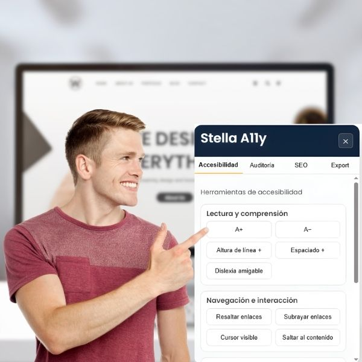
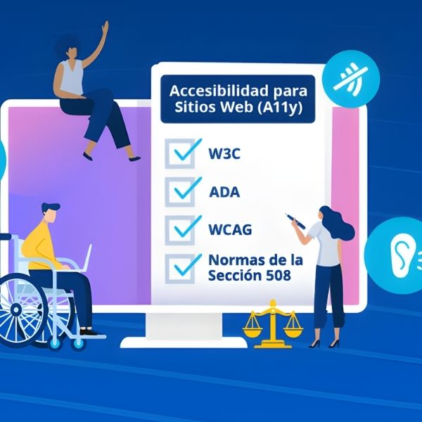

Nuestras soluciones

Sitios Web Accesibles
Construimos tu página web con accesibilidad integrada desde la base.
Diseñamos y desarrollamos sitios que cumplen WCAG, con estructura correcta, semántica limpia, colores con contraste adecuado, navegación por teclado y prácticas que potencian tu SEO desde el día uno. Tu sitio nace accesible, optimizado y listo para crecer.


Remediación de tu sitio
Adaptamos tu sitio actual para cumplir con estándares de accesibilidad.
Revisamos tu estructura, jerarquías, navegación por teclado, etiquetas, formularios, contraste y contenido. Entregamos un plan claro y aplicamos correcciones para que tu sitio sea más usable, inclusivo y consistente.
Auditoría y Reporte
Obtén un reporte completo del estado de accesibilidad de tu sitio.
Evaluamos tu página con criterios WCAG, identificamos cada problema y entregamos un documento claro, práctico y accionable. Perfecto para quienes desean conocer su nivel de accesibilidad antes de tomar decisiones o presentar avances a clientes, equipos o auditorías internas.
Galería
Ejemplos visuales relacionados con accesibilidad, auditoría y estándares.
Beneficios de una página web accesible
Una página web accesible es aquella que puede ser utilizada por todas las personas, sin importar sus capacidades,
dispositivos o condiciones de navegación. En Stella A11y entendemos la accesibilidad no como un añadido, sino como
una base esencial para construir experiencias digitales responsables, funcionales y sostenibles.
Uno de los principales beneficios de una web accesible es que amplía el alcance del sitio. Al eliminar barreras como
textos poco legibles, estructuras confusas o navegación limitada al mouse, el contenido se vuelve usable para más
personas, incluyendo usuarios con discapacidad, adultos mayores y personas que utilizan tecnologías de apoyo.
Además, una web accesible tiene un impacto positivo en el SEO técnico. Los buscadores priorizan sitios bien
estructurados, con HTML semántico, encabezados correctos y textos alternativos en imágenes, elementos clave de la
accesibilidad.